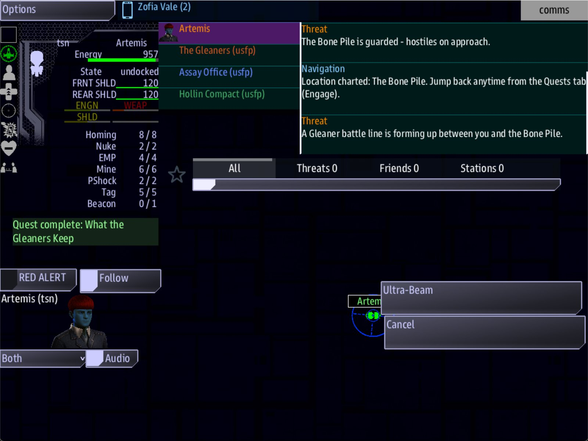

Class 5, Lecture 13 - Battles, part 2: a battle that waits for the story¶
What you will have at the end¶
One fight in your universe that is not left to the dice. When the story sends the crew to The Bone Pile, a Gleaner battle line of four or five ships is formed up in front of them, and a warning on Comms tells them so. It is not there before the story arrives. It is there again if the crew runs and comes back, and after a Continue. When the fight is won, it is over.

At The Bone Pile: the guards' Threat line, and ours, "A Gleaner battle line is forming up."You paste one card at the end of story.mast, and change nothing else. This is the only
lecture in this class that adds lines of MAST to do something new. You copy them. You do
not need to be able to write them.
The video¶
About 5 minutes. Subtitles are available in the player.
Before you start¶
- Your
MyUniversemission as Lecture 12 left it.kestrel_verge.amd,story.mastandsettings.yamlmatchc5-12-battles-part-1\example\. sbs lint MyUniversesayscleanfor all six files.- The game closed, and the save deleted:
C:\Cosmos\data\missions\common_data\saves\universe_save_the_kestrel_verge_1.yaml.
Words for this lecture:
| Word | Meaning |
|---|---|
| Set piece | A fight you staged: this place, these ships, this moment in the story |
| Card | A few lines of MAST to copy, with the words to change marked. You met three in Class 1 |
| Route | A line in story.mast that starts with two slashes. The game runs the lines under it when the thing it names happens |
| Tier | From Lecture 12: how strong a fleet is, from 1 to 11 |
Step 1 - Why the dice are not enough¶
Your story ends at The Bone Pile. The goal you wrote in Lecture 7 says so:
### [Break the Bone Pile](goal_bone_pile)
---
Scope: shared
Starts when: revealed
Done when: destroy 4 enemies
Win: The Bone Pile is broken, and what was taken from the Tern is going home.
Citation: Forty years late, the third colony has been counted.
---
The Tern's people are stacked here with her cargo. Four Gleaner hulls stand between you and them.
-  Break the hulls that guard the pile
-  Then the Tern's people can go home
Forty years is long enough. Nobody else is coming for them.
"Four Gleaner hulls stand between you and them." Do they?
Lecture 12 counted The Bone Pile: at Difficulty 4, four Gleaner ships and three guards.
But the four Gleaner ships are there only because the game rolled an enemy system at
-4, -3, and every new game rolls again. The Breakers say Enemy mix: 60%. Asked about
400 new games, the game made The Bone Pile an enemy system in 245 of them. In the other
155, about four games in ten, the crew arrives for the last fight of the story and finds
three raiders.
Everything in Lecture 12 sets the odds. A set piece is for the one place where the story cannot take odds.
Step 2 - The card¶
Open story.mast. Go to the very end of the file, below the last line. Leave one empty
line, and paste this.
#
# The Bone Pile: a Gleaner battle line waits there while "Break the Bone Pile" is open.
#
//shared/signal/universe_arrived if ARRIVE_I == -4 and ARRIVE_J == -3
await delay_sim(1)
->END if not quest_is_active(universe_shared_id(), "goal_bone_pile")
battle_at = universe_cell_origin(ARRIVE_I, ARRIVE_J)
prefab_spawn(prefab_fleet_raider, {"race": "torgoth", "fleet_difficulty": 9, "ship_roles": "gleaners, raider", "START_X": battle_at.x + 6000, "START_Y": battle_at.y, "START_Z": battle_at.z + 6000})
universe_comms("A Gleaner battle line is forming up between you and the Bone Pile.", "Threat", "#f80")
->END
The line that begins prefab_spawn is long. It is one line. Do not break it.
What each line does:
| Line | Meaning |
|---|---|
The three # lines |
A note, so that next month you know what this block is for |
//shared/signal/universe_arrived |
A route. The game says universe_arrived each time it builds a system for an arriving ship, and this block hears it |
if ARRIVE_I == -4 and ARRIVE_J == -3 |
Only when the system is this one. The two numbers are the landmark's At: |
await delay_sim(1) |
Wait one second. The story needs that second: see Step 3 |
->END if not quest_is_active(...) |
Stop here unless this step of the story is open right now. The word in quotes is the step's key |
battle_at = ... |
Finds where in space the game put this system |
The prefab_spawn line |
Makes one fleet |
The universe_comms line |
Sends the crew a warning: a line on Comms, on the ship's own channel |
->END |
The block is finished |
The words you may change. Seven of them, and nothing else.
| On the card | What it is | Yours |
|---|---|---|
-4 and -3, on the route line |
The system. Copy the two numbers from the landmark's At: |
|
"goal_bone_pile" |
The key of the step the battle waits for. It is the word in round brackets in that step's heading | |
"torgoth" |
The kind of ship: one of the six from Lecture 12's table | |
9 |
The tier, from 1 to 11. Use Lecture 12's table to pick a number of ships | |
gleaners, the first word of "gleaners, raider" |
The key of the side the ships fight for. Leave , raider after it |
|
6000, twice |
How far from the arriving ship the fleet forms up. Change both to the same number | |
The sentence, and "Threat" |
The warning the crew reads, and its title |
"#f80" is the title's color, as a web color. Orange is what the game uses for its own
warnings.
Why //shared/signal and not //signal. The two look alike. A //shared/signal
route runs once, on the server. A //signal route runs once for every console that is
connected, and once more for the server. On //signal, every console would make
its own battle line. Anything that makes a ship goes on //shared/signal. Lint knows
this rule, and warns.
Step 3 - How it is tied to the story¶
The line that ties the battle to the story is this one:
In the Quest Log a step is hidden, then open, then done. The battle is made only while Break the Bone Pile is open. This is every case, each one played:
| When the crew arrives at The Bone Pile | Battle line | Why |
|---|---|---|
| Early, before the story has sent them | No | The goal is still hidden |
| On the story's business, with What the Gleaners Keep open | Yes: 4 or 5 ships | Arriving finishes that step and reveals the goal. One second later the route looks, and the goal is open |
| Again, after running away | Yes: one battle line, not two | The system was removed when the crew left, and built new when they came back |
| After Continue, saved at The Bone Pile with the goal open | Yes | Continue builds the system the crew was in, and that counts as an arrival |
| After the step is done | No | The step is done, not open. This was played with the card waiting on another step, because finishing this goal ends the game: it has a Win: line |
That is what await delay_sim(1) is for. The game finishes What the Gleaners Keep
and reveals the goal at the moment of arrival, and the card's route hears the same
arrival. Without the one-second wait the route looks first, sees a hidden goal, and
makes nothing.
The fleet is four or five ships because Torgoth tier 9 is "4-5" in Lecture 12's table. The game picks each time. They formed up about 7,000 from where the ship arrived, close enough to see and far enough to turn.
What these ships are. The first word of "gleaners, raider" is their side. So:
- They are Gleaners, and hostile to the crew. They count for
destroy 4 enemies: with four Gleaner kills the goal finished and the game showed itsWin:sentence. - They are on the same side as every other Gleaner ship, so a ceasefire with the Gleaners is a ceasefire with them. The guards at the same landmark are raiders, and no ceasefire reaches those. The ceasefire was not played against this fleet.
- They are not guards. The game does not remember that they were destroyed. The goal remembers.
Step 4 - The budget again¶
A set piece is added on top of everything Lecture 12 counted. The Bone Pile now:
| At The Bone Pile, Difficulty 4 | Ships |
|---|---|
| The Gleaners' fleets, when the system is an enemy system | 4 |
The guards, torgoth 7 |
3 |
The battle line, torgoth tier 9 |
4 or 5 |
| All the hostile ships | 11 or 12 |
The tier on the card is like the tier on Guards:. It does not move with Difficulty.
A crew at Difficulty 2 meets the same battle line as a crew at Difficulty 9. That is
the point of a set piece, and it is why you choose the number with care.
Twelve ships is a lot for one light cruiser, and nobody has fought this fight. Two ways to make the end of your story lighter, both from lectures you have done:
- Lower the tier on the card. Tier 6 is three Torgoth ships.
- Take the
Guards:line off the landmark, now that the battle line does its job.
Step 5 - Check it¶
Save the file.
The result is the one from Lecture 12: six files, all clean, and
6 amd + 1 mast file(s): 0 error(s), 0 warning(s).
Each row below was made on purpose, one change to the finished card, then linted, then played through the story to The Bone Pile.
Mistakes lint finds
| The mistake | What the game does | What lint says |
|---|---|---|
//signal/universe_arrived |
In a test with no consoles, the same as the right line. With consoles it runs once for each | A warning: "calls a spawn - runs once PER console; use //shared/signal" (signal-side-effect-spawn) |
One equals sign: ARRIVE_I = -4 |
Nothing runs: no ship, no station | An error: "Maybe you meant '==' ... The story does not compile, so NOTHING in this mission runs" (mast-compile). Lint prints it twice, the second time against line 1 |
The last bracket of the long line typed as ) with no } before it |
Nothing runs | An error: "closing parenthesis ')' does not match opening parenthesis '{'" (mast-compile) |
| A curly quote mark in the sentence | Nothing runs | An error: "invalid character" (mast-compile) |
| The card pasted inside the map's lines, in the middle of the file | The game stops with an error as it starts. No ship and no station | A warning: "this line never runs: the label ended at ->END" (mast-unreachable) |
Mistakes lint cannot see
Lint says clean for every one of these.
| The mistake | What the game does |
|---|---|
universe_arrive, or any other misspelling of universe_arrived |
No battle line, ever. Nothing is said |
No if on the route line |
A battle line at The Bone Pile, and another in every system the crew jumps to while the step is open. In an empty system: four Gleaner ships and your warning |
or where and goes |
A battle line at The Bone Pile, and in every system whose first number is -4 or whose second is -3 |
A wrong number: ARRIVE_J == 3 |
No battle line at The Bone Pile |
arrive_i and arrive_j in small letters |
The game stops with an error soon after it starts. mast.runtime.log says name 'arrive_i' is not defined |
await delay_sim(1) left out |
No battle line when the story arrives. The card looked before the goal was open |
The ->END if not quest_is_active line left out |
A battle line on every arrival at The Bone Pile, from the first minute of the game |
A key that is not the step's: "goal_bonepile", or the step's name "Break the Bone Pile" |
No battle line, ever. Nothing is said |
The step's key changed in kestrel_verge.amd and not on the card |
The same: no battle line, and nothing is said |
"race": "gleaner", or any word that is not one of the six kinds |
No fleet. The crew still gets your warning. mast.runtime.log says "no fleet table for race 'gleaner'" and lists the six |
"fleet_difficulty": 0 |
A fleet at the game's Difficulty: two ships at Difficulty 4 |
"fleet_difficulty": 20 |
Six of the largest. Any tier above 11 is 11 |
The tier in quote marks: "fleet_difficulty": "9" |
The game stops with an error when the story arrives at The Bone Pile |
"ship_roles": "raider", with no side |
The battle line is five raiders. They are hostile, but they are nobody's: not Gleaners, and no ceasefire reaches them |
"ship_roles": "raider, gleaners", the side written second |
The same. The first word is the side |
"ship_roles": "gleaner, raider", the side's key misspelled |
Four ships on a side called gleaner, which is no side. They are not hostile to the crew. mast.runtime.log says "Side not found: [gleaner]" |
"ship_roles": "hollin, raider", a friend's key |
Five Torgoth ships on the Hollin Compact's side. They are not hostile to the crew |
battle_at.x + 6000 and the other two changed to bare numbers |
The fleet is made 360,000 away, in another part of space. The crew gets the warning and never sees a ship |
| The card pasted twice | Two battle lines: nine ships |
The universe_comms line left out |
The battle line with no warning. Only the game's own Threat line for the guards comes in |
| A long dash in the sentence | It plays. The game is sent the dash, and cannot draw it. Type a plain one |
Four things that look wrong and are not:
| You wrote | What the game does |
|---|---|
"race": "Torgoth", with a capital |
Works |
| The long line broken after a comma, inside the curly brackets | Works. Keep it as one line all the same: it is easier to see that nothing is missing |
| The whole card indented four spaces | Works. Keep it at the left edge, where every other route starts |
The last ->END left off, when the card is the last thing in the file |
Works. Keep it: the next card you paste below would run into this one |
So check these by eye:
- The route line says
//shared/signal/universe_arrived, and its two numbers are the landmark'sAt:, joined byand, each with two equals signs. ARRIVE_IandARRIVE_Jare in capitals.await delay_sim(1)is the first line under the route.- The key in quotes is in your
.amdfile, in round brackets, letter for letter. - The side's key is the first word inside
"gleaners, raider". - The long line is one line.
- The card is in the file once, at the end.
Step 6 - Play it¶
- Engage The Third Colony. At The Tern, a small guard, as in Lecture 12.
- The Quest Log now has The Assay Ledger. Engage The Second Colony, hail the Assay Office on Comms, and ask about the Tern. The ledger step closes and What the Gleaners Keep appears.
- Engage What the Gleaners Keep. The place's card, then two lines on Comms titled Threat: the guards, and yours. The battle line is about 7,000 away. The guards are out by the wreck.
- Run. Engage any other place. Then come back from Charted Locations. One battle line is there, not two.
- Close the game and start it again with the same line. It continues at The Bone Pile, and the battle line is there.
What you need to know about a set piece
| Fact | What it means for your story |
|---|---|
| The battle is made on arrival, while its step is open | Hang it on the step the crew is doing when they get there, or the one that arrival reveals |
| It is made again on every arrival while the step is open | A crew cannot wear it down over two visits. They win it in one visit |
| Its tier does not move with Difficulty | You decide how hard the ending is. Test it at the Difficulty you ship with |
| Nothing about the battle is saved. The step is saved | After Continue the battle is fresh and whole, even if the crew had destroyed half of it |
| It arrives for the first ship into the system | The game's own notes say a second crew jumping into a system that already has a ship in it does not set it off again. That was read, not played |
The recipe card¶
This is card R8. Keep it with the three from Class 1.
| Card | Does | The words to change |
|---|---|---|
| R8 | Makes one fleet when a ship arrives in one system, while one step of the story is open | The system's two numbers; the step's key; the kind of ship; the tier; the side's key; the distance; the sentence |
One card makes one fleet in one place. For a second set piece somewhere else, paste the
card again under the first and change its words. For two fleets in one place, copy the
prefab_spawn line under itself and give the copy a different distance.
If something goes wrong¶
| What you see | Likely cause |
|---|---|
| No ship and no station anywhere | The card does not compile. Run lint and fix the first error |
| No battle line at the story's arrival | await delay_sim(1) is missing. Or the key in quotes is not the step's key. Or the two numbers are not the landmark's At: |
| A battle line the first time the crew wanders in | The ->END if not quest_is_active line is missing |
| A battle line in the wrong system, or in every system | or where and goes, or no if on the route line |
| The battle line is there and is not hostile | The first word of "gleaners, raider" is not the key of a foe side |
| The game stops with an error soon after it starts | ARRIVE_I or ARRIVE_J in small letters, or the card is inside the map's lines. mast.runtime.log names it |
No battle line, and mast.runtime.log says "no fleet table for race" |
The kind of ship is not one of the six |
| Two battle lines | The card is in the file twice |
Exercise¶
- Find the one place in your story where the crew must find a fight. If there is none, you do not need this card. Say so in a note and stop.
- Decide which step the fight belongs to. Write its key down.
- Paste the card and change its seven words.
- Work out the budget for that system with the set piece in it. Is it a fight your crew can win at the Difficulty you chose in Lecture 12? If not, change the tier, not the Difficulty.
- Play the story to that place. Then play it wrong on purpose: go there early. There should be no battle line.
- Read
mast.runtime.logafterward. It should be empty.
Checkpoint¶
You are done when all five are true:
sbs lint MyUniversesayscleanfor all six files.- A crew that arrives early finds no battle line.
- A crew that arrives on the story's business finds one, and reads your warning.
- A crew that leaves and comes back finds one, not two.
mast.runtime.logis empty after a play.
Next¶
Lecture 14 turns the map round. Somebody else gets to play your universe from above: the Admiral, with worlds to mine, officers to commission and research to climb.
Further reading¶
- Lecture 11 of Class 1, "Just enough MAST": how to read a route, and the three rules for changing one.
- "Fleets & raiding" in the sbs_utils guide: the fleet this card makes.
- "Battles and fleets" in the Open Universe reference: this card's timing, and what else puts enemy ships in a system.
StormsBeacon\story.mastin the Storm's Beacon mission, the part namedxorn_engage: a set piece that hunts the crew wherever they linger. Read it; do not copy it yet.
Download this lecture's finished files (a zip of its example folder).